A food delivery app for busy people in Nigeria, designed around the real frustrations of ordering in a city like Lagos.
Discipline
Mobile app UX/UI
Role
UX/UI designer
Market
Nigeria
Timeline
1 month, bootcamp project
Methods
Survey, interviews, personas, user flows, wireframes, prototyping
Tools
Figma
Quick Meal
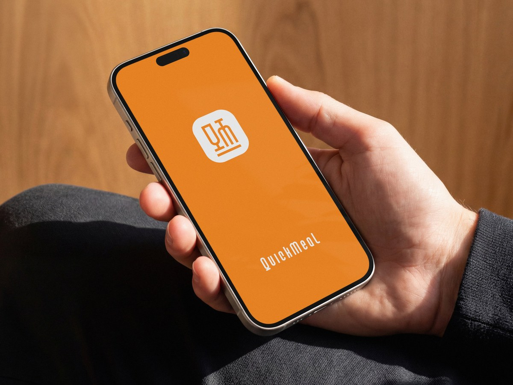
Problem
Traffic, landmark addresses and riders without POS make food delivery in Nigeria slow and stressful.
What I did
Surveyed 101 people, built two personas and designed the full app in Figma, from user flow to high-fidelity prototype.
Result
A tracking-first delivery app with scheduled orders and one-tap rider contact, designed in one month.
Overview
Ordering food in Nigeria should be simple, but it often isn’t. Deliveries get stuck in traffic, riders call again and again to find the address, and payment can fall apart at the door when the rider has no POS.
Quick Meal is a food delivery app for busy people. It brings a wide range of restaurants into one place, shows prices up front, lets you track your order live and gives you several ways to pay.
The local context
Designing for Nigeria meant designing for how people actually live and pay.
Traffic
In cities like Lagos, heavy traffic makes delivery times unpredictable, so honest timing and live tracking matter more than speed claims.
Landmark addresses
Many people give directions by landmarks rather than exact street addresses, which is a big reason riders end up calling.
Many ways to pay
People switch between cards, bank transfers and cash, so a single payment method shuts people out.
Busy schedules
Long commutes and work hours mean people want to plan meals ahead, not just order on impulse.
Research
101people surveyed
77.2%order food online often
I ran a survey and follow-up interviews about what people wanted to change about delivery apps. The same complaints came up again and again:
Slow deliveries
Food arrives late and cold, with no clear idea of when it will turn up.
No POS at the door
Riders often don’t carry a POS terminal, forcing a scramble for cash or a transfer at the door.
Endless calls
Riders call repeatedly to confirm the address, which is frustrating for busy people.
No live tracking
Customers can’t see where their order is, so waiting feels longer and more stressful.
Who I designed for
Two personas, a student in Lagos and a young professional in Abuja, kept every decision grounded in real needs.
Oreoluwa Somoye
“I just want to order, know when it’s coming, and get back to my assignment.”
Age
19
Occupation
Computer Science student
City
Lagos
Monthly allowance
₦100,000
Spends on food
₦5,000–₦10,000
User story
A third-year student at the University of Lagos. Long cafeteria queues push her to order online, and between lectures she needs food sorted fast.
Goals
See exactly where her order is and when it will arrive
Get her food on time, between classes
Order in a few taps, with no confusion
Pain points
Orders that arrive wrong
No way to track the delivery
Long, unpredictable waits
Cluttered, confusing app interfaces
Damilare Ayomide
“Sunday is the one day I order. It should just work.”
Age
24
Occupation
Remote graphic designer
City
Abuja
Monthly budget
₦90,000
Spends on food
₦5,000–₦10,000
User story
A remote designer who lives with family, so meals are usually home-cooked, except on Sundays. That’s when he orders, and he has no patience for apps that waste his time.
Goals
Receive complete, accurate orders
Get his food when it was promised
Order quickly, without distractions
Pay the way that suits him
Pain points
Orders that arrive with items missing
Late deliveries
No clear way to complain when something goes wrong
Ad-cluttered apps that slow ordering down
What they have in common: both want orders that arrive right, on time and without hassle, and both are put off by cluttered, confusing apps.
From problems to features
Slow deliveries → live tracking
Follow your order on a map from the kitchen to your door, with an estimated arrival time.
No POS at the door → pay your way
Pay by card, bank transfer or on delivery, chosen before the rider sets off.
Endless calls → clearer addresses
Saved addresses with room for landmarks and delivery notes, so riders can find you without calling.
Busy days → scheduled delivery
Order now and choose a delivery time that fits your day.
When contact is needed, you can reach the rider directly from the tracking screen, instead of waiting for a call.
Process
I followed design thinking: empathize, define, ideate and prototype. Testing is the next step.
User flow
Two parts: getting started, where every route ends on Home, and the four tabs, linked by the key handoffs from cart to checkout to tracking.
User flow
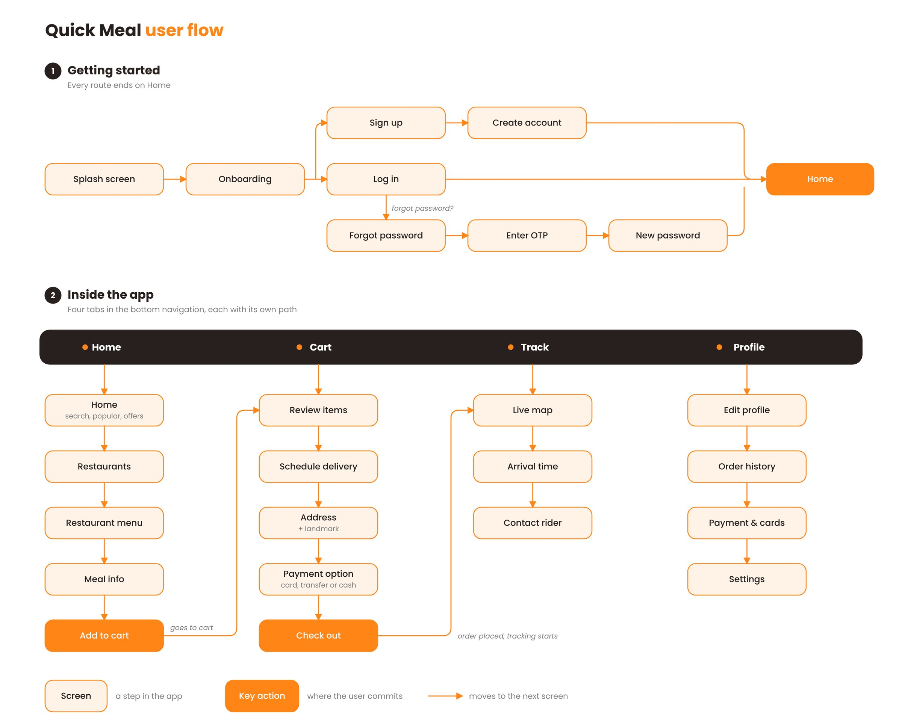
User flow: getting started, then the four tabs and how they connect
Sketches
On paper first: an app map, rough screens and the logo ideas that became the QM mark.
Paper sketches: app map, screen layouts and early logo ideas
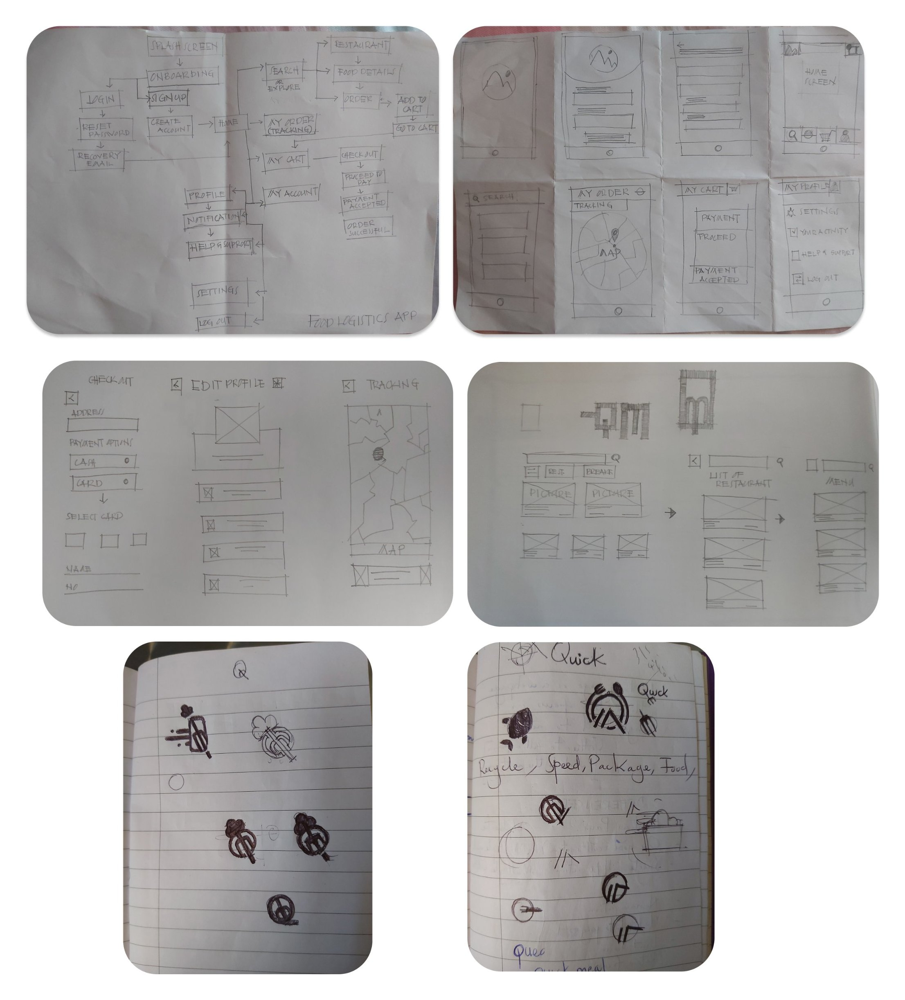
Paper sketches: app map, screen layouts and early logo ideas
Low-fidelity wireframes
Greyscale wireframes tested structure before colour.
Wireframes: splash, onboarding, sign-up, log-in and password recovery
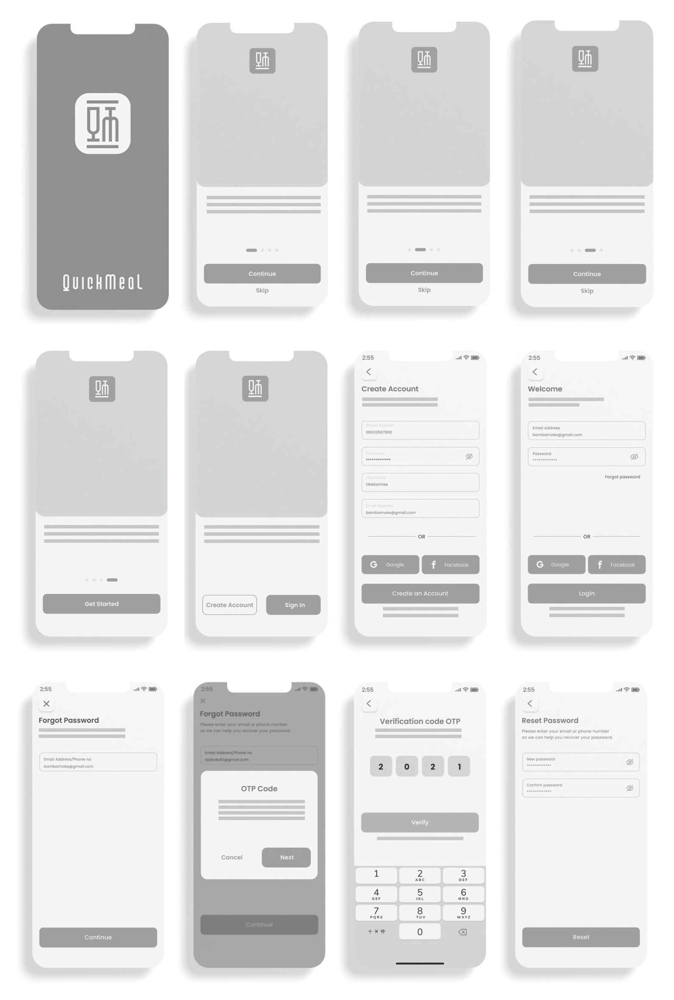
Wireframes: splash, onboarding, sign-up, log-in and password recovery
Style guide
A warm, appetising orange leads the palette. Cream keeps backgrounds soft, and grey and near-black handle text so food photos stay the hero.
Orange#FF8517 · Primary, buttons and highlights
Cream#FFF3E8 · Backgrounds and cards
Grey#7F7F7F · Secondary text and icons
White#FFFFFF · Surfaces and text on orange
Espresso#28201E · Headings and body text
Aa
PoppinsHeadings, body text and buttons
Logo
The mark is built from a dinner table: a glass for the Q, a fork for the M and a line for the table. Simple strokes keep it clear at app-icon size.
Logo construction
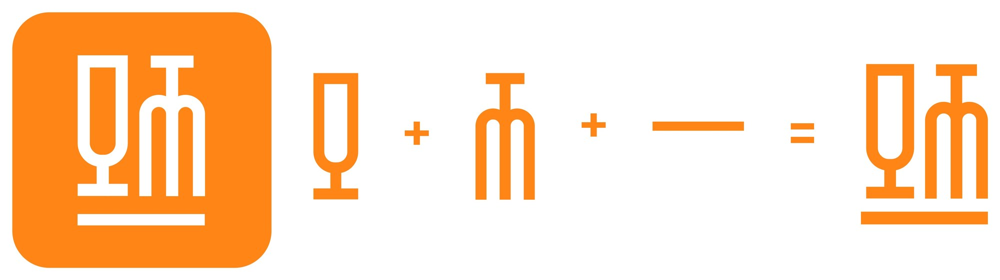
Logo construction: glass (Q) + fork (M) + table line = the QM mark
Iconography
24 icons: line versions for actions and navigation, solid versions for selected or confirmed states.
Iconography
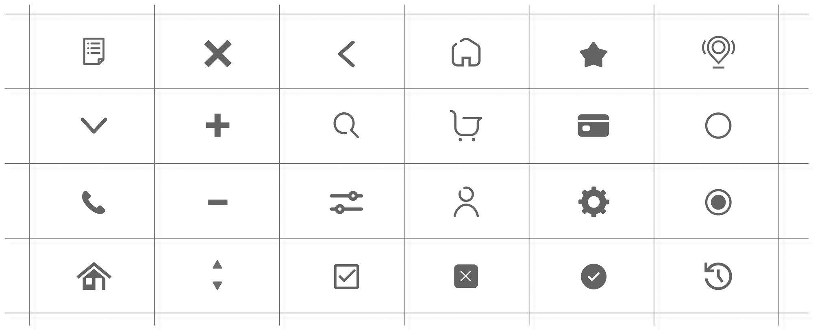
Icon set
High-fidelity prototype
Cream backgrounds, orange for every main action, and real Nigerian dishes front and centre.
Onboarding
Four short screens, with Skip on every step.
Onboarding
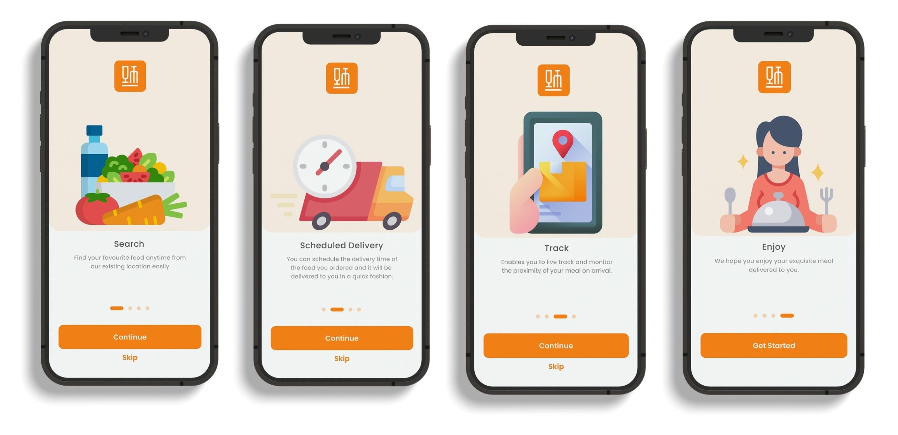
Onboarding: four screens introduce search, scheduled delivery and live tracking, with Skip on every step
Sign up and log in
Sign up with a phone number or email, or use Google or Facebook.
Welcome, create account and log in
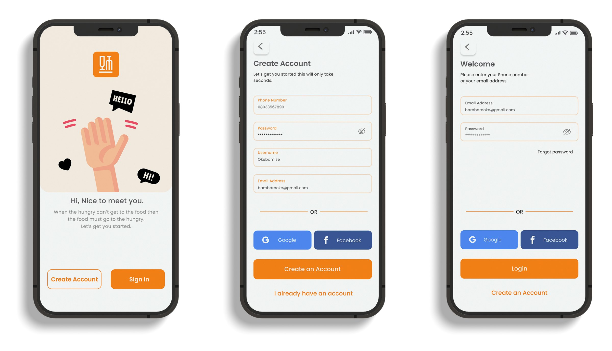
Welcome, create account and log in
Password recovery
Reset by email or phone, with a resend option if the code doesn’t arrive.
Forgot password, OTP confirmation, verification and reset
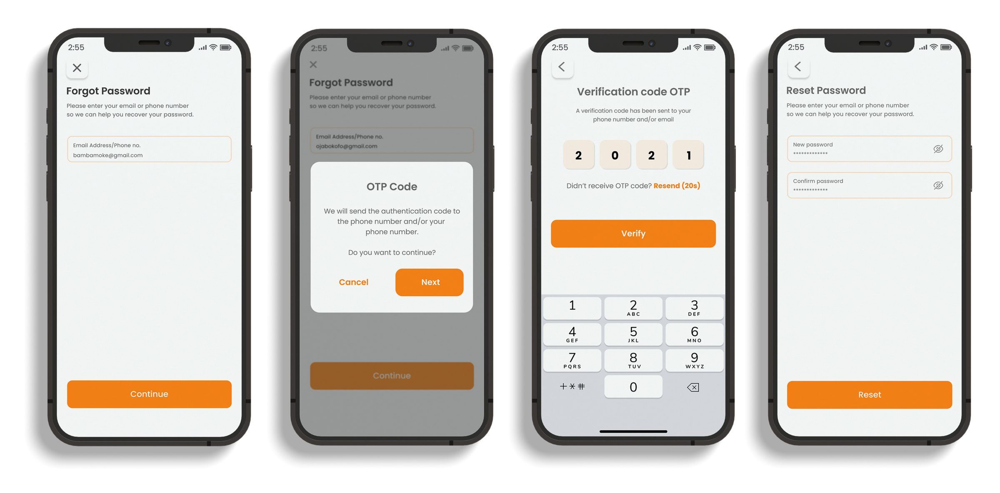
Forgot password, OTP confirmation, verification and reset
Home and browsing
Search, quick filters and popular local dishes, with each restaurant’s delivery time and price range up front.
Home, restaurants and a restaurant’s menu categories
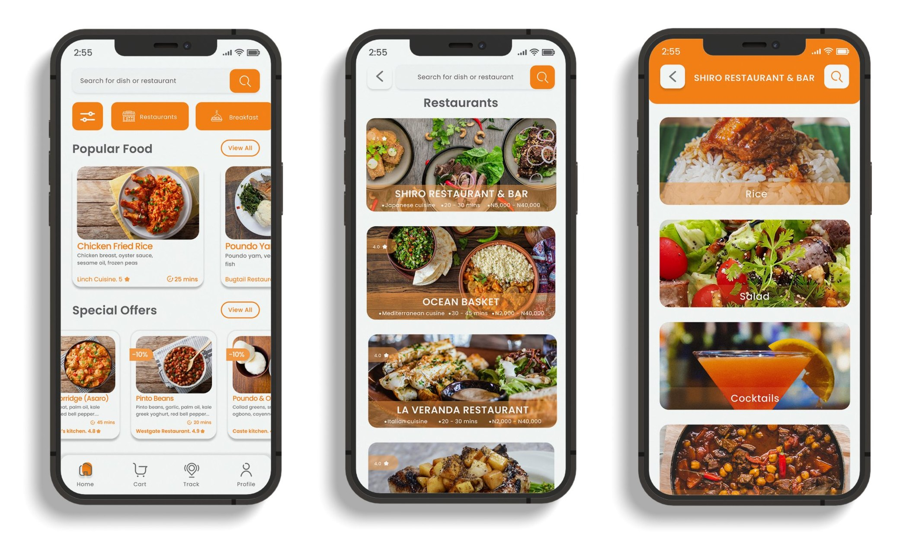
Home, restaurants and a restaurant’s menu categories
Ordering and cart
Add dishes straight from the menu. The cart shows fees, the total and the estimated time, and lets you schedule delivery.
Menu, meal details and cart
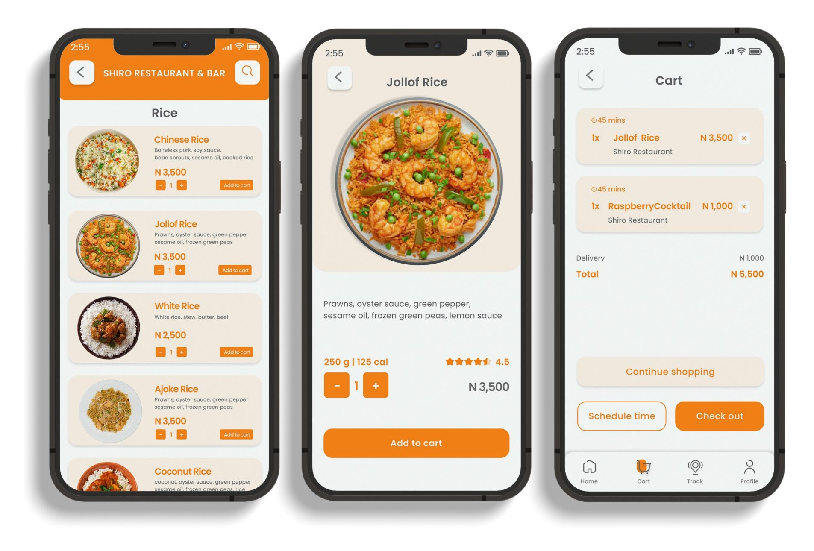
Menu, meal details and cart
Tracking and profile
Follow the rider live, see each order stage and call the rider in one tap. Profile keeps orders, addresses and cards together.
Live tracking, order stages and profile
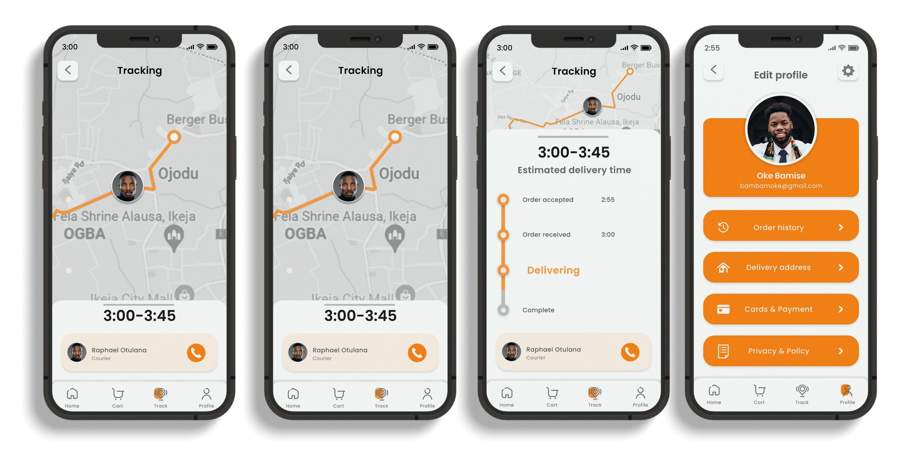
Live tracking, order stages and profile
Looking back
Quick Meal was my first UX project, built during a bootcamp, and it’s where I learned the full process, from research to a working Figma prototype. It taught me that the hardest problems were local ones like traffic, addresses and payment, not visual ones. If I revisited it, I’d add a checkout step with landmark addresses and card, transfer or cash options, and test the prototype with real customers and riders.